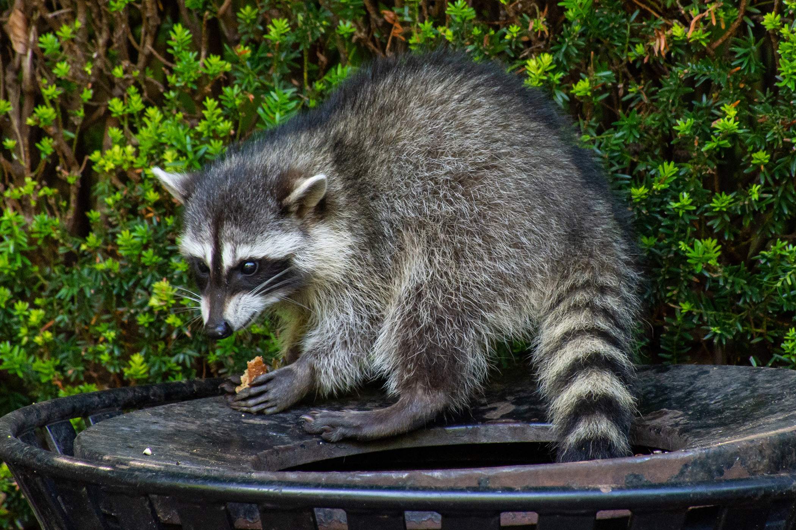

Raccoons are common in Vancouver, BC, especially in urban areas like backyards, parks, and alleys. They're nocturnal meaning most of their activity is during the night and they are also curious, smart and adaptable. Raccoons are also omnivores meaning they eat veggies and meat and anything else they can get their hands on, they often scour garbage bins for food as well.
While raccoons have natural predators like coyotes, what endangers them the most are humans. As urbanization and human expansion has occured the lifespan of raccoons has decreased as encounters with humans and human-made hazards, such as vehicles, can significantly shorten a raccoon's lifespan.
Listen to a raccoon: